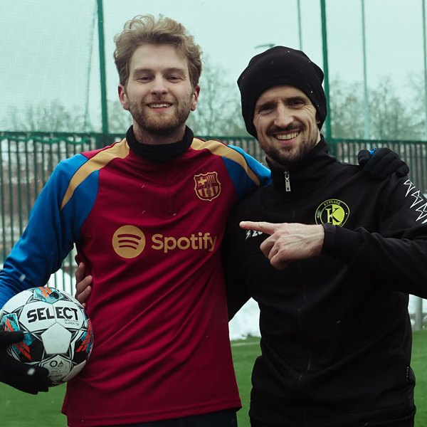
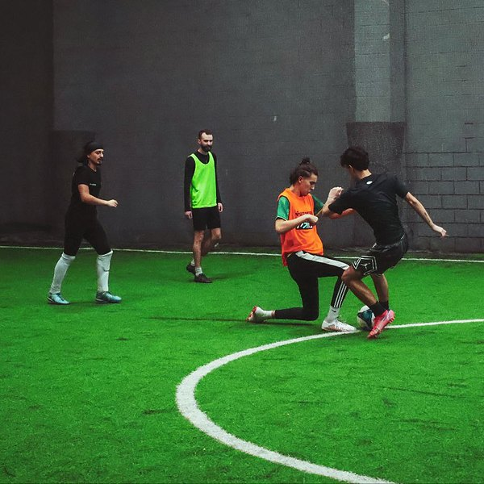
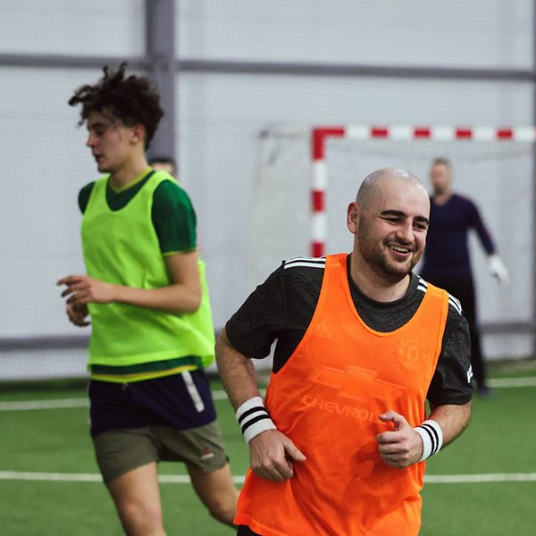
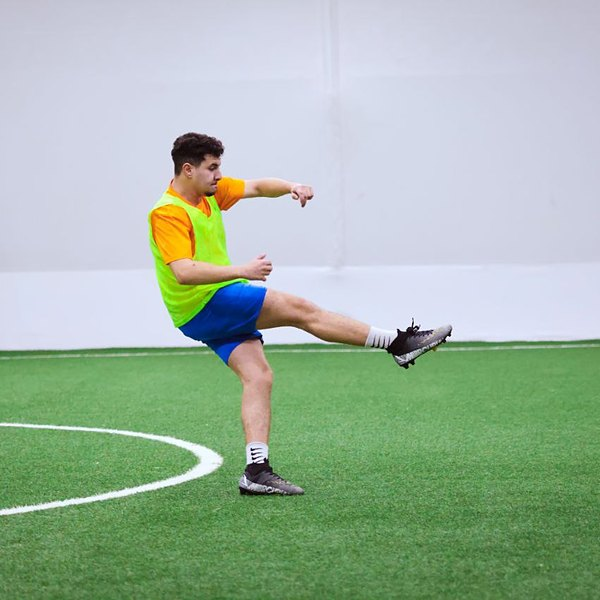
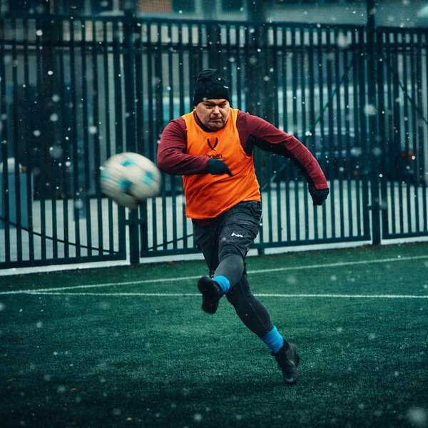
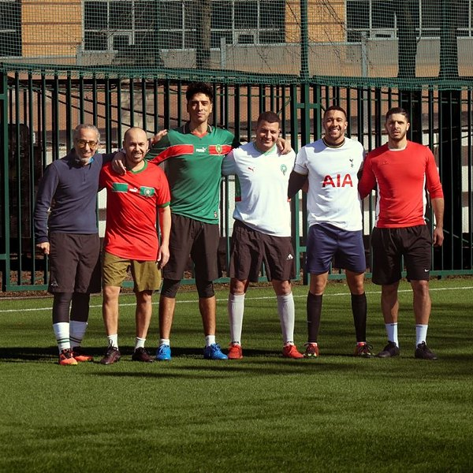
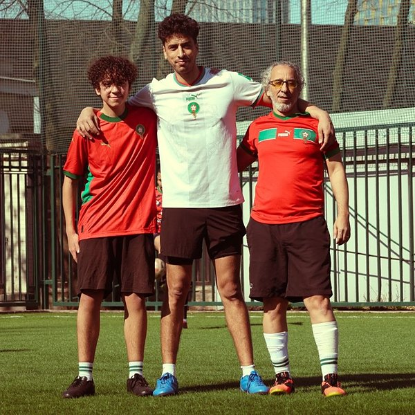
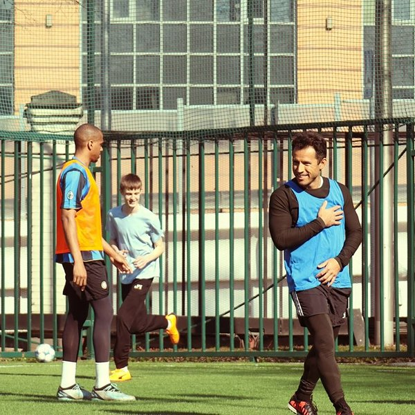
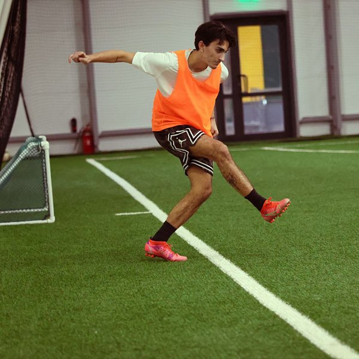

Football group for locals and expats in Russia! ⚽ Moscow International Football started in January 2025, when a few foreigners living in Moscow decided to get together and play. Today the group brings together players from Morocco, Colombia, Cuba, Turkey, India, Nigeria, Russia and many other countries — and English is the common language on and off the pitch.
Everyone is welcome, no matter your skill level. Come for a friendly match, meet new people and enjoy the game together!
Our Format
Sunday matches: the main game of the week is on Sunday, usually around midday or early afternoon, for 1 to 1.5 hours. Depending on how many people sign up, we play 5×5, 6×6 or 7×7, often with three teams rotating so everyone gets plenty of playing time.
Weekday games: members also share extra futsal and pick-up games on weekday evenings when there are free spots — just keep an eye on the chat.
Teams: teams are drawn at random before the game, and each team gets a colour. Bring a t-shirt or bib in your team's colour, sportswear, suitable shoes and a bottle of water.
Fair play: the group has a short set of rules — no racism or discrimination, respect for teammates and opponents, no blaming others for mistakes, a warm-up for everyone and arriving on time.
Extras: many games are filmed or photographed, so after the match you can watch the best moments and goals. The group has also had its own club jerseys, and members share invitations to amateur tournaments and friendly matches.
Where we meet
The pitch changes with the season — indoor arenas in the cold months, outdoor pitches when it's warm. The exact place and time are always in the weekly announcement.
| Venue | Type | Address |
|---|---|---|
| Football arena at Seligerskaya | Indoor 🏟️ | ul. Ivana Susanina, vl. 1 (m. Seligerskaya) — locker rooms, showers and a café |
| Football Pitch №24, Luzhniki | Outdoor ☀️ | m. Sportivnaya / Luzhniki |
| Sokolniki | Outdoor ☀️ | m. Sokolniki |
📸 From our games









Price
Players share the cost of renting the pitch. It depends on the venue and the number of players, and is usually around 550–750 ₽ per person for a game.
Registration
Each week a list of players for the Sunday match is posted in the group chat, usually with 12–14 spots plus reserves.
- Add your name to the list in the chat.
- Pay your share to the organizer — the first to pay get the confirmed spots.
- If you can't come, let the group know early: if you cancel the day before the game, your payment stays unless you find a replacement.
- Group chat: @moscowsoccer
Grab your boots — see you on the pitch! ✨